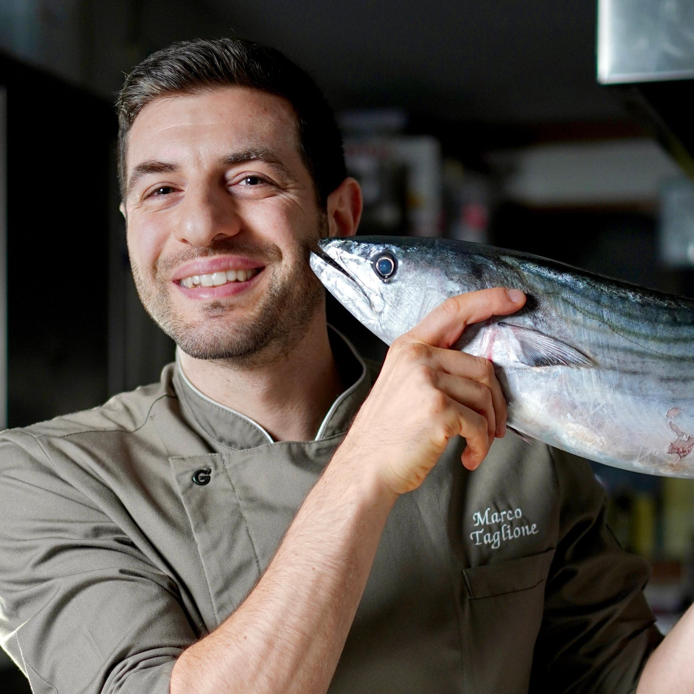
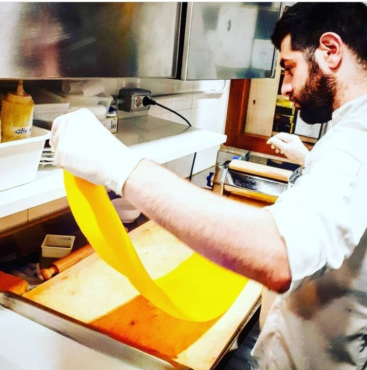
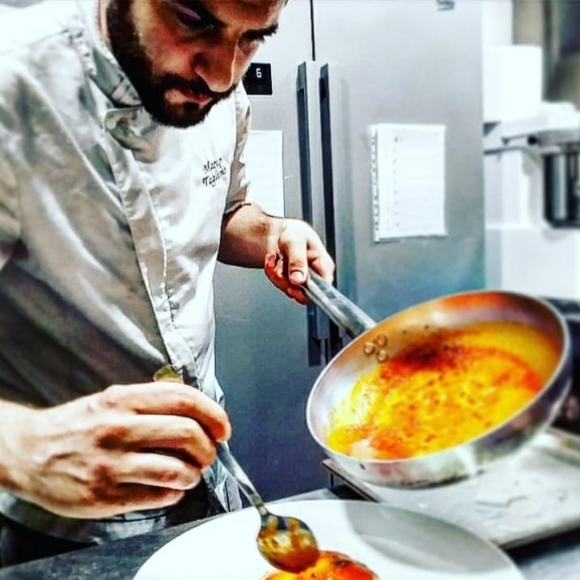
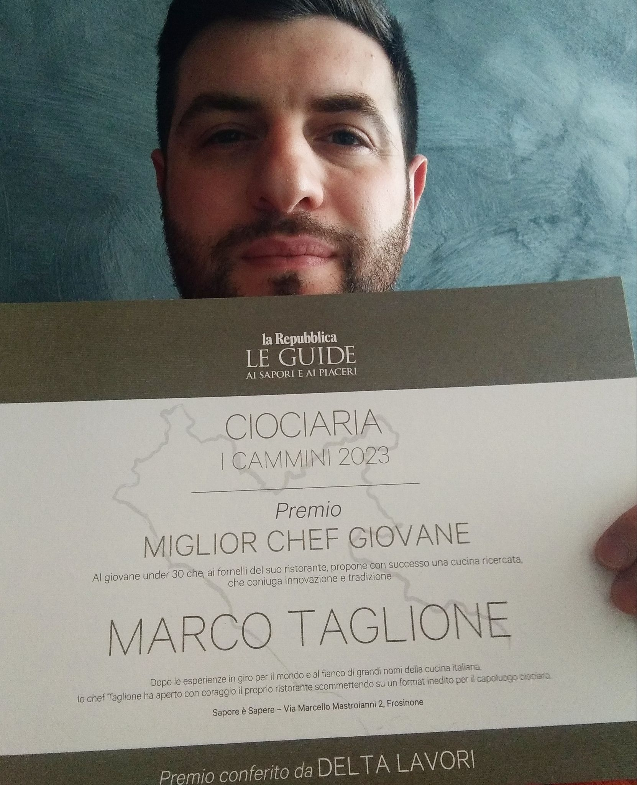

Il talento dietro i piatti
Lo Chef Marco Taglione
Un percorso tra cucine stellate e hotel di lusso, in Italia e all'estero.

Chi è
Tecnica, mare e curiosità
Chef e co-fondatore
Dalla Boscolo Etoile Academy alle brigate stellate di Antonello Colonna e Cannavacciuolo, Marco Taglione ha costruito un mestiere fatto di studio e disciplina. A Sapore è Sapere quella tecnica diventa libertà: piatti di mare che osano accostamenti inediti senza mai perdere equilibrio.
Lo chef Marco Taglione inizia la sua avventura all'interno delle cucine professionali all'età di 23 anni, dopo avere conseguito con successo il lungo percorso di cucina alla Boscolo Etoile Academy di Tuscania (VT).
La sua prima esperienza nell'hotel 5 stelle lusso Boscolo Exedra a Nizza, in Francia, gli permette di acquisire conoscenze soprattutto sulla gestione della partita dei secondi piatti, dove da subito mette in mostra una buona capacità organizzativa, velocità e pulizia che gli valgono il primo contratto in una cucina professionale.
Dopo l'esperienza francese si sposta a Londra, dove dapprima lavora nel caffè/bistrot Murano, bistrot dello stellato Murano, e successivamente entra a far parte della compagnia Jumeirah, nell'hotel 5 stelle lusso Jumeirah Carlton Tower.
Tornato in Italia, lavora in due nuovi hotel 5 stelle lusso: prima l'Almar a Jesolo, poi il Grand Hotel Via Veneto a Roma.
Arriva quindi la svolta: l'approdo alla corte del grande chef Antonello Colonna (1 stella Michelin), dove diventa capo partita dei primi piatti, gestendo al meglio piatti classici e innovativi e perfezionando la realizzazione della pasta fresca, soprattutto ripiena.
Prima di aprire il proprio ristorante, però, sente il bisogno di un'ultima esperienza formativa: il Cannavacciuolo Caffè e Bistrot di Novara (1 stella Michelin), dove è capo partita dei secondi piatti, imparando tecniche e cotture innovative che gli permetteranno di realizzare piatti dalle molte sfaccettature, consistenze diverse ed estrema complessità.
Siamo giunti al 23 Maggio 2019, quando lo chef Marco Taglione, insieme alla sua compagna — nonché pasticcera e maître Marika Urbani — decide di aprire il ristorante Sapore è Sapere.
- Boscolo Etoile Academy — Tuscania (VT) · Formazione
- Boscolo Exedra ★★★★★ — Nizza, Francia · Secondi piatti
- Murano caffè/bistrot — Londra
- Jumeirah Carlton Tower ★★★★★ — Londra
- Hotel Almar ★★★★★ — Jesolo
- Grand Hotel Via Veneto ★★★★★ — Roma
- Antonello Colonna ⭐ Michelin — Capo partita primi piatti
- Cannavacciuolo Caffè e Bistrot ⭐ Michelin — Novara · Capo partita secondi piatti
- Sapore è Sapere — Frosinone · 23 Maggio 2019
In cucina
Dietro ai piatti



La pasticceria
Marika Urbani
Pasticcera e maître del ristorante, nonché co-fondatrice insieme allo chef Marco Taglione. Il suo lavoro dà forma alla sezione dessert del menù, dove tecnica e creatività si incontrano nel dolce.